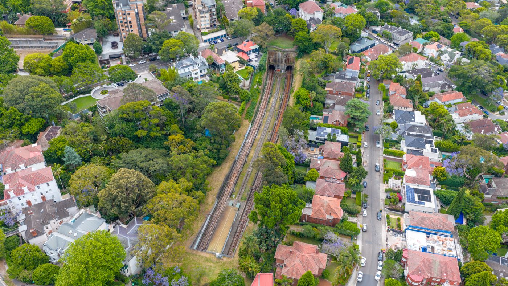
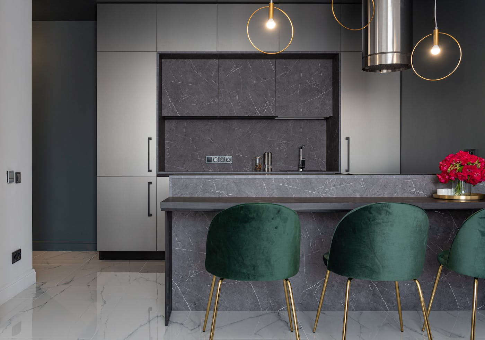
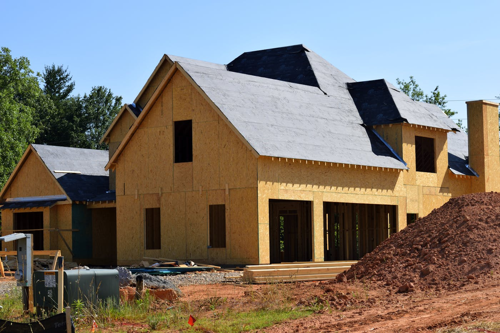

Quick answer: Builders of duplex homes in Sydney manage site assessment, architectural design, council approvals, and construction of two attached dwellings on a single lot. In 2026, construction costs run $2,800–$4,500 per m² of combined floor area. A pair of 150 m² dwellings costs $840,000–$1.35M to build. Add demolition, design fees, council contributions, and strata subdivision and the all-in project budget — land excluded — typically reaches $1.2M–$1.8M. Most Sydney lots in R2 and R3 zones with a minimum 450 m² area and 12 m frontage qualify for dual occupancy development under the Housing SEPP 2021.
The phrase “duplex specialist” has developed a quality similar to “freshly baked” on a supermarket shelf — technically defensible, applied broadly. A builder who completed one duplex in 2021 and has since pivoted mostly to extensions calls themselves a duplex specialist. So does the team that has delivered forty duplexes across metropolitan Sydney over the same period. The brochure does not say which.
[Right. Straight face now.] Here is what the distinction actually means, what a genuine builder of duplex homes does differently, what the project costs and how long it takes, and when the duplex path is the wrong call for your site.
- What a duplex home actually is
- Why landowners build duplexes in Sydney
- Land requirements for duplex development in NSW
- What a duplex costs to build in Sydney
- The approval path: CDC vs DA
- What the timeline actually looks like
- Generalist builder or duplex specialist?
- When not to build a duplex
- Six questions to ask your duplex builder
- FAQ
What a Duplex Home Actually Is (and What It Isn’t)
Two dwellings on a single allotment, sharing a party wall. That is the definition under NSW planning law. The Housing SEPP 2021 classifies it as “dual occupancy (attached)” — two self-contained homes joined at one wall or floor, on land under a single Torrens title. The form is distinct from a multi-dwelling townhouse project, which involves three or more dwellings and a different approval pathway.
“Dual occupancy (detached)” — two separate structures on one title, not sharing a wall — also falls under the dual occupancy category. The more common Sydney configuration is side-by-side on a standard residential block, though stacked duplexes appear on sloping sites and narrower lots where a split-level design makes the geometry work.
The distinction from a townhouse project is both legal and practical. Duplex development sits under a simpler approval pathway, with lower minimum lot size thresholds in many zones. This is why landowners with ordinary 500–700 m² suburban blocks pursue duplexes rather than townhouse projects — the planning controls can work at a scale that a multi-dwelling application cannot. For a broader look at what specialist builders deliver in this space, our guide to duplex builders in Sydney covers the market in detail.
Why Landowners Build Duplexes in Sydney
Three motivations account for the majority of duplex projects across metropolitan Sydney.
Dual rental income. A completed duplex generates income from both dwellings, typically 3.5–4.5% gross yield per year across the pair. On a well-located block acquired at near-land value, the arithmetic is reasonable — particularly relative to holding a single dwelling on the same site.
Live in one, lease the other. An upgrade path for families who want a new home in a suburb they know, with rental income from the second dwelling to offset the construction debt. This changes the affordability of the project substantially.
Knockdown rebuild with a return. On a block purchased for land value, building two dwellings rather than one spreads the construction cost across two sellable or lettable titles. The second title funds part of the first.
Each motivation produces a different brief for the builder — different specifications, cost sensitivities, and priorities around the party wall and shared infrastructure.

Photo via Pexels
Land Requirements for Duplex Development in NSW
Under the Housing SEPP 2021 and the Low-Rise Housing Diversity Code, attached dual occupancy is permissible in R1, R2, R3, and RU5 zones across NSW unless the council’s Local Environmental Plan (LEP) explicitly prohibits it. Sydney councils cannot block dual occupancy development on eligible lots — this was the purpose of the state policy change in 2021.
Minimum standards that apply to most metropolitan Sydney councils:
- 450 m² minimum lot size for attached dual occupancy
- 12 m minimum street frontage (varies by council DCP)
- Floor space ratio (FSR) and height limits from the relevant LEP still apply
- Not in a heritage conservation area that restricts dual occupancy or demolition
A lot that meets the 450 m² threshold may still have its buildable envelope significantly constrained by setbacks, site coverage limits, or a specific heritage provision. The lot size is a necessary condition. It is not a sufficient one.
Before briefing a builder, confirm three things on the NSW Planning Portal: your lot’s zone, whether attached dual occupancy is permissible under your LEP, and whether a heritage overlay applies. This takes under ten minutes and eliminates the most common reason duplex feasibilities collapse mid-engagement.

Photo via Pexels
What Does a Duplex Cost to Build in Sydney?
Construction costs for a duplex in Sydney in 2026 depend on specification, site conditions, and the builder’s procurement model. A working guide:
| Specification | Cost per m² (total construction) |
|---|---|
| Standard mid-spec | $2,800 – $3,500 |
| Well-specified custom | $3,200 – $4,500 |
| Architectural / high-spec | $4,500 – $6,500+ |
For a typical side-by-side duplex — 150 m² per dwelling, 300 m² combined floor area — mid-specification construction runs $840,000–$1.05M before anything else.
What gets added:
- Demolition and site clearing: $20,000–$50,000
- Architect or building designer fees: $60,000–$120,000
- Structural and civil engineering: $20,000–$35,000
- Council contributions (Section 7.11): $25,000–$80,000
- Strata subdivision to create separate titles: $20,000–$45,000
- Landscaping, driveways, fencing (×2): $50,000–$120,000
The all-in project budget for a two-dwelling duplex on an existing Sydney block — construction, demolition, soft costs, and strata subdivision, land excluded — commonly lands at $1.2M–$1.8M. That figure surprises people who started with the per-m² number on a napkin. It should not surprise you.
The Approval Path: CDC vs DA
Two approval paths are available for duplex development in NSW.
Complying Development Certificate (CDC): Assessed by a private certifier against the Low-Rise Housing Diversity Code. If the proposed duplex meets all numerical standards — lot size, frontage, setbacks, height, FSR, site coverage — a CDC can be issued in approximately 20 business days. The state code’s standards often differ from council DCP standards; in most cases the more permissive state standards apply for CDC assessment.
Development Application (DA): Required when the site cannot meet CDC criteria — irregular lots, heritage constraints, or designs that need variation from the standard controls. Council assesses the DA. Metropolitan Sydney timelines in 2026:
| Council area | Typical DA timeline |
|---|---|
| Inner west and eastern suburbs | 3–6 months |
| Parramatta and western Sydney | 3–5 months |
| Northern Beaches and North Shore | 4–8 months |
| Hills Shire | 6–12 months |
After construction, most owners proceed to strata subdivision to create separate titles for each dwelling — a separate process that typically adds 3–4 months to the post-construction programme. Torrens title subdivision is also possible on some lots where the duplex configuration and remaining lot dimensions meet subdivision standards.

Photo via Pexels
What the Timeline Actually Looks Like
| Phase | Duration |
|---|---|
| Site assessment, zoning check, feasibility | 4–6 weeks |
| Design and documentation | 3–5 months |
| CDC approval | 3–4 weeks |
| DA approval (typical metropolitan council) | 4–8 months |
| Construction — single storey duplex | 12–16 months |
| Construction — two-storey duplex | 14–20 months |
| Strata subdivision (post-construction) | 3–4 months |
For a CDC-eligible duplex on a straightforward Sydney suburban block, total elapsed time from first builder conversation to handed-over keys runs 18–24 months. A DA path adds the gap between your council’s typical assessment timeline and the CDC equivalent.
Plan the contingencies as real possibilities. Supply chain delays, variations, and extended neighbour objection periods are not tail risks — they are features of building in metropolitan Sydney. See our guide to building a new home in Sydney for a broader look at how these timelines play out across different project types.
Generalist Builder or Duplex Specialist?
This section is the one most duplex guides avoid. We are not most guides.
The majority of licensed residential builders in NSW will accept a duplex contract. Construction skills transfer: foundations, framing, wet areas, finishes. What changes between a generalist and a genuine duplex specialist is familiarity with the specific approval pathway, the design decisions that matter for two-household living, and the project management experience that makes shared-infrastructure decisions straightforward.
A builder who has delivered multiple duplexes will know, without asking, how party wall construction affects acoustic performance under the BCA, which shared drainage configurations create problems at strata subdivision, and how to price the project as two dwellings rather than “two houses on one site” — a distinction that changes how variations are handled and what the contract looks like.
The generalist is not automatically a worse choice. On a straightforward CDC-eligible lot with a standard brief, broad residential experience may be adequate. On a complex site — sloping, irregular, heritage-adjacent, or requiring Torrens subdivision — the specialist’s familiarity with the specific planning and construction requirements is worth paying for. Our guide to choosing a custom home builder covers the vetting process in detail; most of the same principles apply here. You can also review completed duplex and multi-dwelling work in our portfolio.
When Not to Build a Duplex
Do not pursue duplex development if your lot does not meet the minimum size and frontage requirements for your zone. This sounds obvious. It is surprising how many feasibility conversations proceed past the point where a basic planning check would have ended them. Confirm your lot’s zone and dual occupancy permissibility on the NSW Planning Portal before briefing anyone.
Do not proceed if the land is in a heritage conservation area that prohibits dual occupancy, restricts demolition of the existing dwelling, or requires design compatibility with the existing streetscape in a way that eliminates the economies of a standard duplex design.
Do not build a duplex if the numbers require both sides to settle immediately to service the construction debt, with no buffer for a slower settlement market. Development finance on a duplex project typically requires both completed dwellings as security. If a pre-sale falls through at settlement, the margin for error is thin.
Do not engage any builder without first verifying their licence on the NSW Fair Trading register. The licence should be current, in the company’s name, and valid for residential construction. That verification takes two minutes.
Six Questions to Ask Your Duplex Builder
Do this before you have had three good meetings and become attached to the renders.
- How many duplexes have you completed in the past three years, and can I speak with three recent clients? Ask for addresses and contact details. The right builder provides both without hesitation.
- Are you familiar with the Low-Rise Housing Diversity Code, and can you assess CDC eligibility for my site before design begins? A builder with genuine duplex experience knows this code well. Hesitation on this question is informative.
- Who manages the project day to day, and how many active sites does each supervisor carry? Duplex projects involve shared-infrastructure decisions — foundations, party walls, drainage — that benefit from consistent, site-specific supervision.
- Do you carry current home building compensation (HBC) insurance for this contract value? Required by law for residential contracts over $20,000. Ask for the certificate before signing anything.
- Can you manage strata subdivision post-construction, or do I coordinate that separately? Some builders handle the process through to separate titles. Others hand over the keys and step back. Know which you are getting.
- What is your current programme and realistic start date? A builder with completely clear capacity and no explanation has a reason for that. A builder with a 4–6 month wait usually does too.
Six questions. Not unreasonable for a $1.5M+ commitment. If you are ready to discuss a duplex project, speak to the TURYN team — we build across metropolitan Sydney and can assess your site’s feasibility before any design commitment.
FAQ
How much does it cost to build a duplex in Sydney?
Construction costs for a mid-specification duplex in Sydney in 2026 run $2,800–$3,500 per m² of combined floor area. A side-by-side pair totalling 300 m² costs $840,000–$1.05M for construction. All-in — including demolition, design fees, council contributions, and strata subdivision, but excluding land — the project budget typically reaches $1.2M–$1.8M.
What block size do I need to build a duplex in NSW?
The minimum lot size under the Housing SEPP 2021 for attached dual occupancy in most metropolitan Sydney councils is 450 m², with a minimum street frontage of 12 m. Individual council LEPs may set higher minimums. Verify your lot’s specific requirements on the NSW Planning Portal before proceeding to any design work.
What is the difference between a duplex and dual occupancy?
In NSW planning law, a duplex is the colloquial term for “dual occupancy (attached)” — two dwellings sharing a party wall on a single lot. “Dual occupancy (detached)” describes two separate structures on one title. Both fall under the same planning category and the same state-level permissibility rules under the Housing SEPP 2021.
Do I need council approval to build a duplex in NSW?
You need either a Complying Development Certificate (CDC) from a private certifier, or a Development Application (DA) approved by your local council. If the proposed duplex meets the Low-Rise Housing Diversity Code standards, the CDC path is available and typically takes around 20 business days. Sites that cannot meet the code require a DA, which takes 4–12 months depending on the council.
Can I sell each side of a duplex separately in NSW?
Yes, after construction and subdivision. Strata subdivision creates separate strata lots for each dwelling and takes approximately 3–4 months post-construction. Torrens title subdivision splits the land itself and is feasible where the duplex configuration and resulting lot dimensions meet subdivision standards. A surveyor can advise which option is achievable on your specific site.
Is building a duplex a good investment in Sydney?
It depends on the site, specification, and entry cost. A completed duplex on a well-located Sydney block typically generates gross rental yields of 3.5–4.5% per year across both dwellings. The investment case is strongest on blocks acquired at near-land value — with an existing structure to demolish — where the construction cost is spread across two saleable or lettable titles.
What zoning allows duplex development in NSW?
Under the Housing SEPP 2021, attached dual occupancy is permissible in R1, R2, R3, and RU5 zones across NSW, unless a council’s LEP explicitly prohibits it. Sydney councils cannot block dual occupancy on eligible lots under this state-level override. Development standards from the LEP — minimum lot size, setbacks, height limits — still apply.
How long does it take to build a duplex in Sydney?
On a CDC-eligible site, from first consultation to handed-over keys: typically 18–24 months. That spans design (3–5 months), CDC approval (3–4 weeks), construction (12–20 months depending on storeys), and strata subdivision (3–4 months post-construction). A DA path adds the gap between your council’s assessment timeline and the CDC equivalent — potentially 6–9 months more in the Hills Shire.